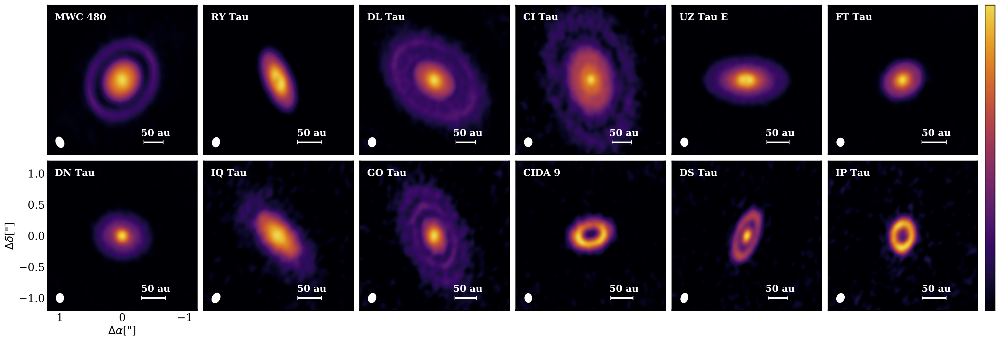
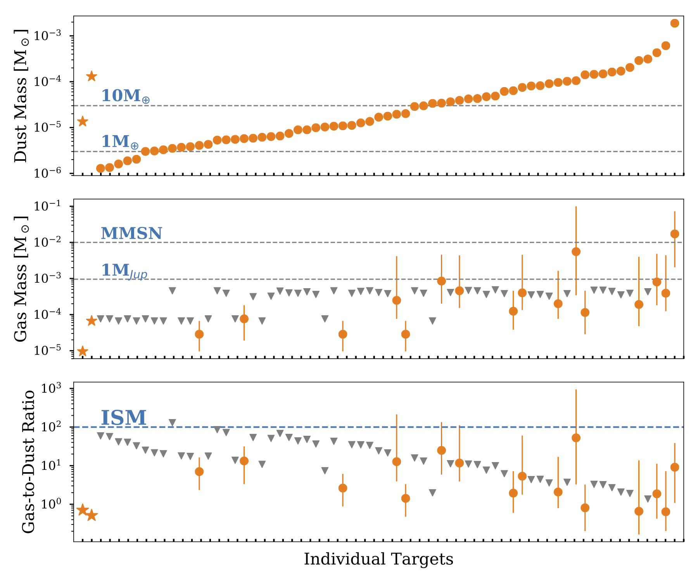

Gaps and Rings in Taurus Disks
Disk substructures (e.g., rings) are frequently seen in recent high resolution observations at mm wavelength. We have performed a high-resolution (~0.1”) ALMA survey (PI. Herczeg) at 1.3 mm for an unbiased sample of 32 disks with spectral type earlier than M3 in Taurus Clouds, without any prior selection on disk structures and mm fluxes.
- Of the 32 disks, more than 1/3 of them show dust substructures, mostly for the first time.
- Axisymmetric rings and gaps are the common type of substructures, while spiral patterns and high contrast azimuthal asymmetries are not detected.
- The correlation between gap locations and widths, the intensity contrast between rings and gaps, and the separations of rings and gaps could all be explained if most gaps are opened by low-mass planets (super-Earths and Neptunes) with low viscosity.
- The gap locations are not well correlated with the expected locations of CO and N2 ice lines, so condensation fronts are unlikely to be a universal mechanism to create gaps and rings.

Protoplanetary Disk Masses
The mass of a protoplanetary disk limits the formation and future evolution of any planet. We have conducted the 0.89 mm continuum and CO gas observations (PI. Pascucci) for 93 protoplanetary disks in the nearby and young (2-3 Myr) Chamaeleon I star-forming region, one of several near-complete disk surveys in ALMA era of disk studies.
- Out of 93 disks, dust thermal emission is detected from 66 disks, while 13CO emission is only detected from 17 disks.
- Disk dust masses are well correlated with the stellar masses with a power-law index of 1.9.
- Assuming typical ISM CO-to-H2 abundance ratio, resulting gas masses are implausibly low, implying an early giant planet formation process.
- Alternatively, the gas masses may be severely underestimated if CO-to-H2 abundance ratio is lower than the ISM value, which may be caused by C and/or O depletion and lock-up, or if CO freeze-out is underestimated.
